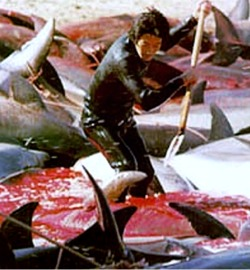

|
 | A huszonkilencedik hétre született, vérszívó csecsemõrõl szóló körlevelek
mellett sokféle szórakoztató mûfaj létezik még. Az egyik igazi ász a mindenféle állatok
kínzása elleni petíció aláírását sürgetõ, nagyon fontos üzenet. A képlet a következõ: Jaj, itt ez a borzalmas felvétel, de csak erõs idegzetûek kattintsanak
rá. Ezek után tényleg azt kapjuk, amit ismerõsünk ígért: élvenyúzást, fejlevágást vagy 2/4-es
elektronikus tánczenét. Ha szerencsénk van, pár órán belül kikerül egy link is, ahol online
aláírhatjuk a petíciót a kínzás ellen. Vördpísz, mondom magamban, és törlöm a levelet. Arról még
soha nem hallottam, hogy bármelyik ilyen világméretûnek nevezett tiltakozás bármilyen eredménnyel
zárult volna. Hacsak azt nem vesszük eredménynek, hogy sok ember szembesül a kegyetlenséggel, ami
után õk biztosan jó emberek lesznek.
A régóta internetezõ
ember szocializációjában valószínûleg fontos szerepet töltöttek be az olyan oldalak, mint a
szanalmas.hu, a Matula Magazin és - hogy az igazán keményeknek ne csináljunk reklámot - egyebek.
Magamból kiindulva azt mondhatom, nem nemesebb lett a lelkem attól, hogy a sok rútságot és szemetet
egyszerûen az arcomba dobták, hanem egyszerûen magasabbra került az ingerküszöböm. Gyakorlatilag
nincs az a borzasztó esemény, vagy tragédia, amire ne lehetne a legocsmányabb hardcore poénnal
válaszolni. Meghalt? Isten éltesse! Ezeket a honlapokat nem
kötelezõ nézegetni. Egészen más a helyzet azonban, amikor egy ismerõs, sõt, barát küld emailt. És
én elhiszem, hogy neki ez valóban fontos, ezt most tényleg meg kell értenem. Rákattintok a csak erõs idegzetûeknek videora, és egészen addig fapofával
nézem, amíg nem történik benne valami észbontóan gusztustalan. (A gyengébb gyomrúak kedvéért arra
nem térek, mit tartok annak...) Valószínûnek tartom, hogy nagyon sok szülõnek fogalma sincs róla,
hogy a gyereke mennyire könnyen rátalálhat egy-egy végtelenül durva felvételre, legyen az lefejezés,
erõszakszeksz (mint állami monopólium, haha) vagy szájbaszülés. Elég hozzá annyi, hogy két klipet
hasonló címkékkel láttak el ugyanazon a videomegosztón. Az oldal automatikusan listázza a hasonló
filmeket, egy kattintás után bármi megtörténhet. Egészséges ember egyszerûen hülyének és betegnek
tartja az ilyesmit, még csak arra se méltatja, hogy felháborodjék rajta. Elkattint,
bezárja.
Tehát itt van a tény, hogy a barátom-barátnõm
átküld egy emailt, és én megnézem a benne linkelt izét. Jó esetben már elõre láttam, hogy
továbbított üzenetrõl van szó. Ezek gondolkodás nélkül mennek a kukába. Idõnként vettem a
fáradságot, és utánanéztem, hány hónapja vagy éve kering már angol nyelvterületeken az, amin
hirtelen minden ismerõsöm egyszerre háborodik fel. Általában nem a mai hírek között szoktak ezek
szerepelni. Ilyenkor lassú mozdulattal a kezembe temetem az arcom, és próbálok megnyugodni. Nekem ez
egyenértékû azzal, mint amikor a dagadt általános iskolai osztálytársam még dagadtabb öccse egy
személyes levélben ír arról, mennyire kiváló és mûködõ pénzkereseti lehetõséget talált az
interneten. Rendszerint néhány óra múlva többen is megosztják velem örömüket, szó szerint megegyezõ
tartalmû levelükben. Nekem csak regisztrálnom kell. Állítólag Venkúverben egy gyerek már megkapta
az ajándék pléjsztésönt, mert százkilencvenöt barátja rányomott egy oké gombra valamelyik honlapon. Na, pontosan ugyanezt a tájékozatlan, buta,
életképtelen pislogást látom a felháborodott alkalmi állatvédõkön is. Sok esetben az sem derül ki, hogy
melyik országban vették fel a kegyetlenséget.
Ami legfurcsább, hogy ez egy jól kitalált módszernek tûnik, pedig
logikusan ebbõl senkinek nem következik haszna. Talán normális emberi igény lenne? Ráadásul
maga az információ továbbadás sem elítélendõ viselkedés. Persze nem én akarok megítélni másokat, de
az álszenteskedés (tegyünk valamit szegény delfinekért!) és a hazudozás (letöltött sablonszöveg a
kiváló munkáról) nem éppen helyes viselkedés. Az emberekért nem kell tenni, azok nem aranyosak, meg
különben is, nekik épül a gyár meg az autópálya. Hajlandó lennék kis összegekben fogadni arra, hogy
a nagyszívû mosómedve/nyuszika/kutyuska/stb.-mentõ emberek közül igen alacsony százalékban
mennének csak el például Sörédre, hogy rövid ideig értelmi fogyatékosokat gondozzanak. Pedig arra
nagyobb szükség lenne, mint az érzõ szív magunkra rajzolására. Az embert ki menti meg attól, hogy
megnyúzzák, megkötözzék, elevenen elégessék? Mert szerintem senki. A rossz sorsú állatok olyan
távol állnak tõlünk, hogy elõbb könnyezzük meg õket, mint az agyonbonyolított világ szenvedõ
embereit. Akik biztos maguknak keresték a bajt, akiken már nem lehet segíteni, akik távol vannak
tõlünk. Megsúgom, hogy szinte ugyanaz a belsõ program kéne, hogy lefusson értük is, mint szegény
plüssjószágokért. Míg az állatok iránt érzett részvét kívánatos emberi tulajdonság, addig az
embereket pusztító vagy magárahagyó eszközök, módszerek, rendszerek és egyebek kritikája még az
egyébként jó emberek között is tabu. Ahogy az is tabu, hogy az online petíciók küldözgetése helyett
számtalan ember szorul rá arra, hogy minden gyengesége és visszataszító tulajdonsága ellenére
megfogd a kezét. Na ezért tartom én nevetségesnek, amikor újra és újra elõkerül egy borzasztó
felvétel.
Más kérdés persze, hogy sokan az életükben is
számtalan példáját adják a többi élõlény iránti részvétüknek, és õk is felháborodva
továbbítják a sokkoló képeket. Megértem, hogy állatvédõk, jószándékú emberek között nem durvaság
forwardolni egy ilyen levelet. De azt aljasságnak tartom, hogy online petíciók kitöltetésével
elhitetik az emberekkel, hogy õk tettek valamit azért, hogy a jövõben semmi ilyesmi ne fordulhasson
elõ. A gyakran a közelünkben folyó, valódi kegyetlenségekrõl talán soha nem is kapunk hírt, pedig
mennyi állat és ember szorulna rá az azonnali és önzetlen segítségnyújtásra.
Bedobok egy egyszerû kérdést. Biztos sokaknak van olyan ismerõsük,
aki a lakásában dohányzik, és mellette kutyát tart. Szintén a lakásban. Melyik lehet rosszabb, az
ötperces klopfolás és élvenyúzás, vagy a kutyus hónapokig tartó fájdalmas küzdelme a tüdõrákkal?
| | vissza a fõoldalra |  |
| 1 2 3 4 5 6 7 8 9 10 | |  | | | | | | | | | | | | | | | | | | | | 1 2 3 4 5 6 7 8 9 10 | |
|


túraszervezõ
túra-rss
mi ez?

legjobbak
legolvasottabbak
tartalomjegyzék
rss feed

AboryM
Caesar
Count Grishnackh
cscsabi
eürdüngh
Feki
GyalogKakukk
Ishukone
Kadzseszka
LACI1993
Mini
Muska
Rommel
Segi
Takezó
tommylee
vikcee
|